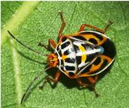

| Home |
| PEST OF JASMINE |
mAJOR pESTS |
| 1. Budworm |
| 2. Gallery worm |
| 3. Leaf webworm |
| 4. Jasmine eriophyid mite |
mINOR pESTS |
| 1. Jasmine leaf roller |
| 2. Redspider mite |
| 3. Jasmine bug |
| 4. Green plant hopper |
| Questions |
| Download Notes |
JASMINE :: MINOR :: JASMINE BUG
Jasmine bug: Antestia cruciata (Pentatomidae: Hemiptera)
Both nymphs and adults suck the sap from tender shoots and buds and prevent flower formation. Nymph is dark brownish black and round adult bug is dark brown shield shaped bug with orange and white marking on wings.
|  |